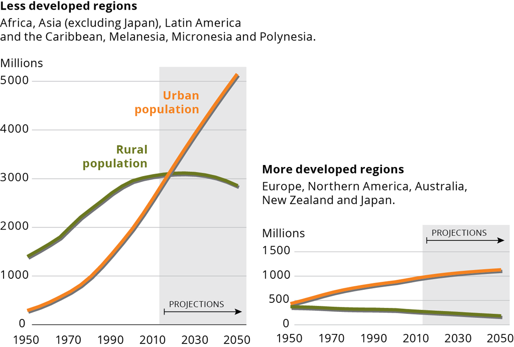
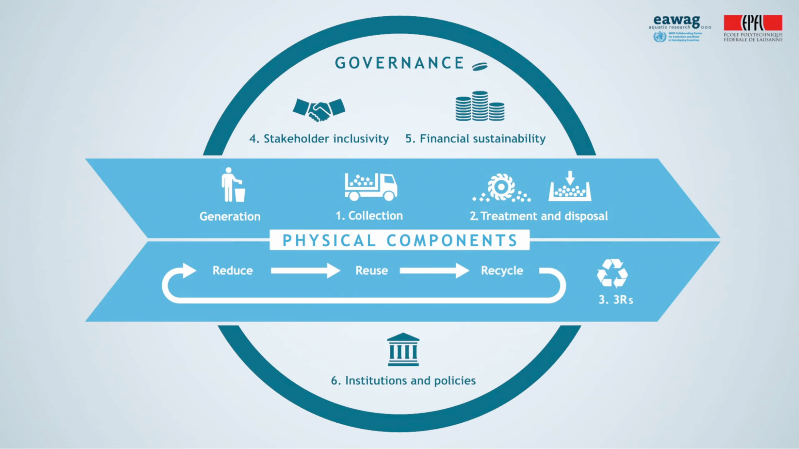
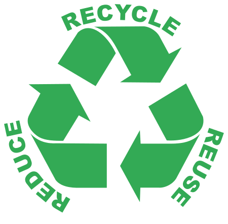
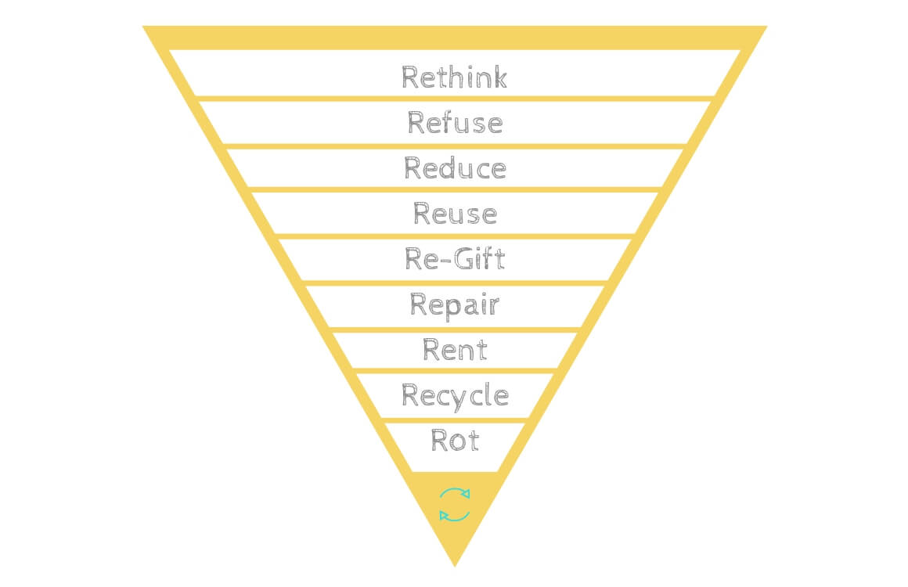
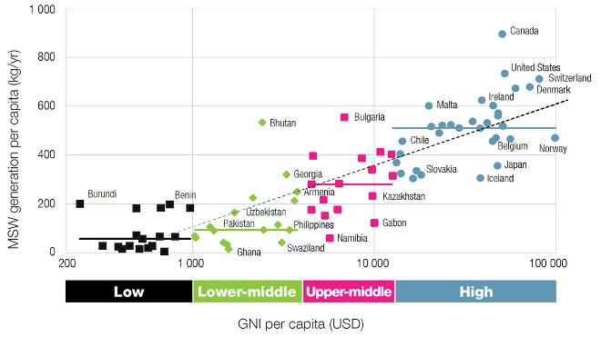
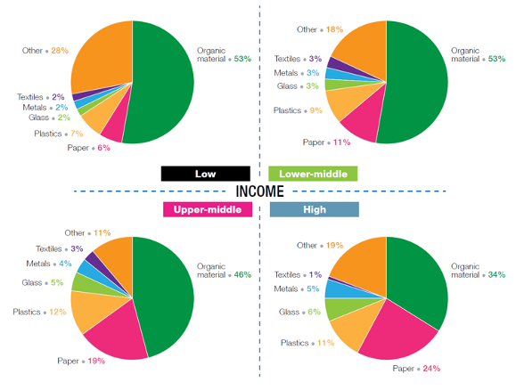
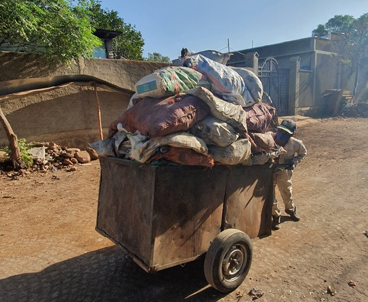
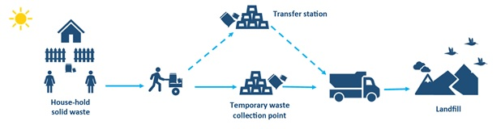
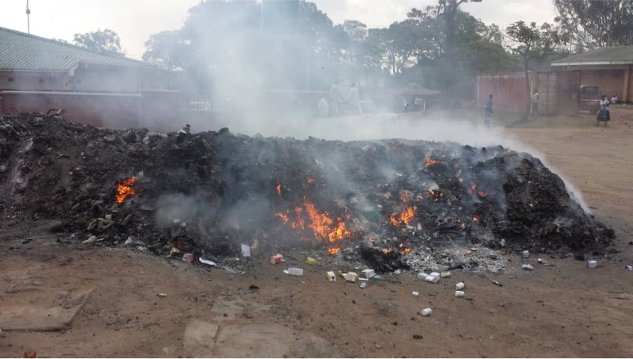
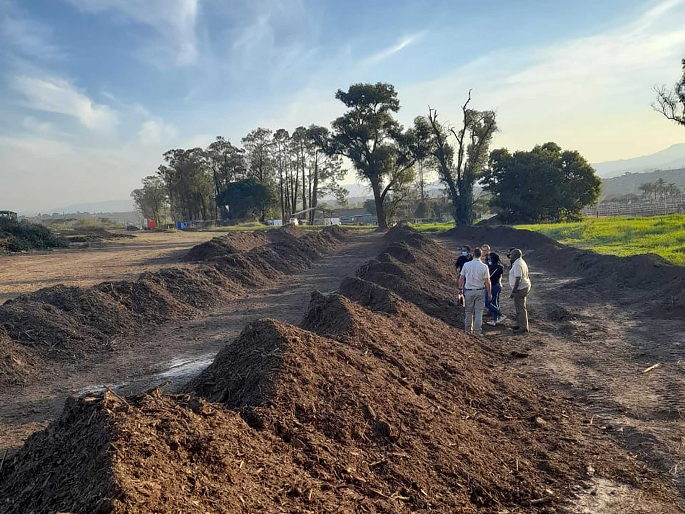

Research Questions
Research Beyond the Lab: Open Science and Research Methods for a Global Engineer
Week 8: Solid Waste Management

Course overview
12:15-13:00: Introduction to Waste Management
13:15-14:00: Presentation and Brainstorming with S. Kahlert, ETH Sustainability
14:15-15:00: Research Questions
Learning Objectives
- Learners can articulate the scale and drivers of the challenges in solid waste management
- Learners understand the flow of waste from Generation to Recovery
- Learners can identify waste management challenges at ETH and/or Zurich
- Learners can develop their own research questions using either the PICOT or FINER method
World challenges in solid waste are urban

Challenges of SWM
- Public health
- Environmental health – Local and Global
- Resource value
Special concern when ecological carrying capacity is overburdened
- Population density = risk of exposure
- Waste materials properties = severity of exposure
Health Threats
- Exposure to pollutants: formal and informal workers (collectors, sorters) exposed to waste (also by flooding)
- Proliferation of pests: waste attract insects and rodents that carry diseases
- Respiratory problems due to open burning of garbage
- Physical risks: occupational related risk of injuries

Environmental Threats
- Contamination of water, soil, air…(plastics, metals, toxins, nutrients)
- Blockage of drains -> flooding -> erosion
- Deterioration of aesthetic value of landscapes (tourism)

Unknown impacts
- Great Pacific Garbage Patch: 0.41 – 8.1% of Pacific Ocean
- Plastic facts: take > 400 years to degrade, bioaccumulation
- More than 80 % from land-based human activities

ISWM Framework

3Rs…

…9Rs

Generation
Switzerland has one of the highest municipal solid waste volumes in the world, at 716 kg of waste per person and year. Nearly 53% of it is recycled.

Generation

Collection and Transport

Collection and Transport

Collection and Transport

Treatment

Treatment

Recovery

Recycling

Stakeholders
- Waste generators – Need to interface with the system (waste segregation?)
- Central/provincial government – Determine strategy, policy, regulation, commitments
- Municipality – Service provider and regulator
- NGOs & CBOs – Awareness and self-help initiatives
- Private formal sector – Provide service
- Private informal sector – Play an integral and important part in most low and middle income countries
- Internal & external support agencies – Support and steer through funding and international conventions
Policies
- Regulation and Enforcement
- Social Mobilization
- Inform, education, communicate
- Economic Instruments
- Incentives, fines
Take home messages
- Management of MSW is one of the major challenges worldwide
- The amount of waste generated is often linked directly to income level and lifestyle
- There is no one-size-fits-all solution to the SWM challenge
- The socio-economic, cultural and institutional context requires special consideration of appropriately adapted technologies, capacity building, including improvement of skills and know-how at local government level
- The ISWM framework is a structured assessment method to understand and find solutions to existing SWM systems.
- Recovery of resources (materials and energy) is a promising way to go in solid waste management